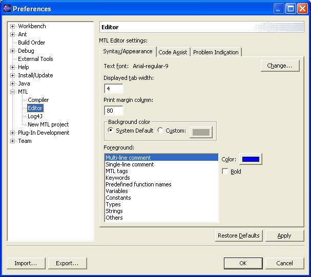
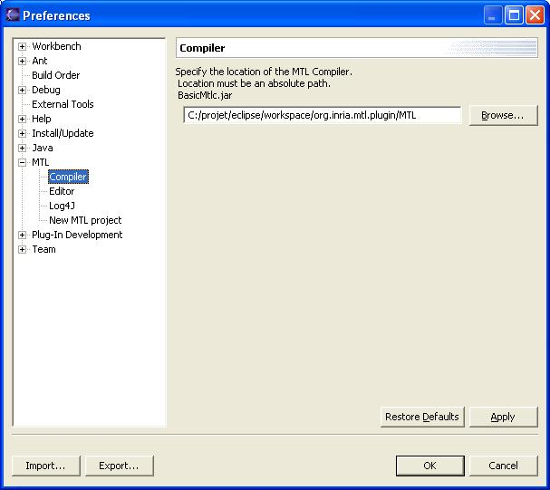
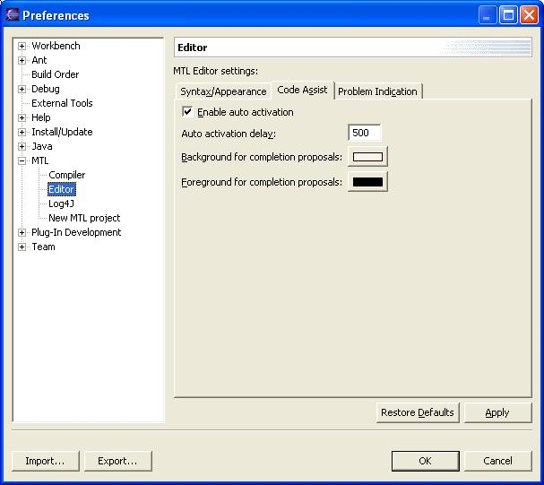
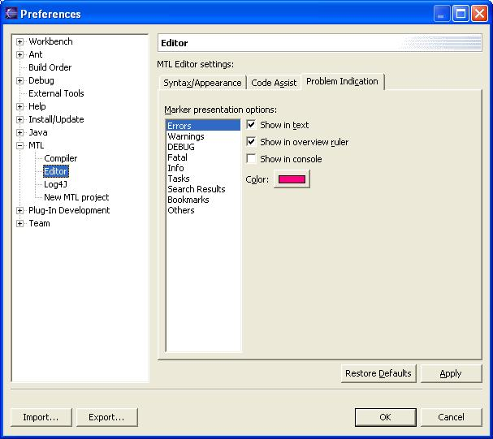
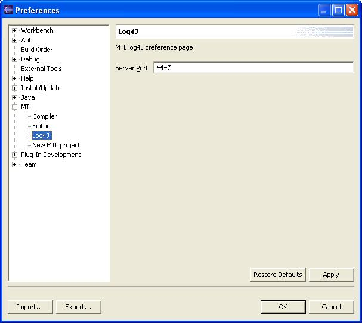
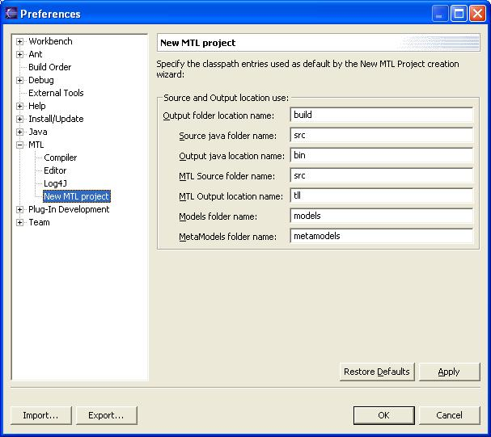

Setting Preferences |
|  |
| Figure 1: MTL Preferences Page
Editor |
|  |
| Figure 2: MTL Compiler directory
setting |
Syntax preferences
| Figure 3: MTL Syntax
setting |
Code assist preferences
|

|
| Figure 4: MTL Codeassist
setting |
Problems preferences
|  |
| Figure 5: MTL Problem
setting |
|  |
| Figure 6: MTL log4j port
setting |
|  |
| Figure 2: MTL new project
Folders names
setting |